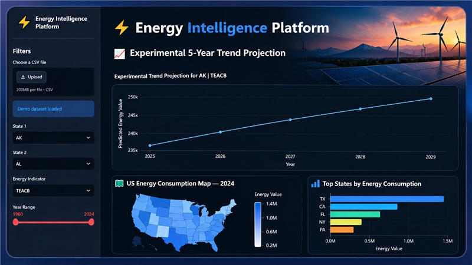
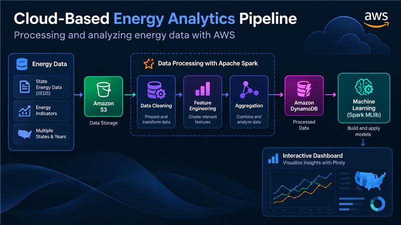
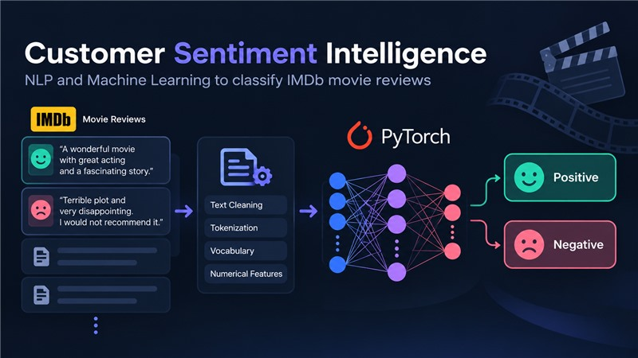

I'm a Petroleum Engineer exploring how AI can solve real-world challenges.

Energy Intelligence Platform
This application analyzes energy data and shows trends in charts. I built it with Python and Streamlit, including experimental projections of trends over five years. The result is a working Streamlit application for exploring energy trends.

Cloud-Based Energy Analytics Pipeline on AWS
This project uses cloud tools to process energy data for analysis. I built it with Python and AWS, using Amazon S3, Apache Spark, and DynamoDB, and included data processing and machine learning components. The result demonstrates a complete cloud data pipeline for energy analytics.

Customer Sentiment Intelligence
This project uses machine learning to classify IMDb movie reviews as positive or negative. I used Python and PyTorch to prepare the review data, train the model, and evaluate its predictions. The model achieved 79% accuracy.